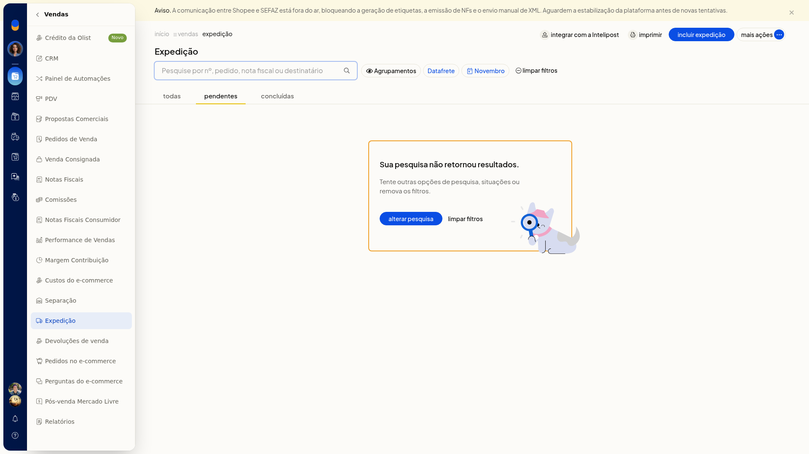
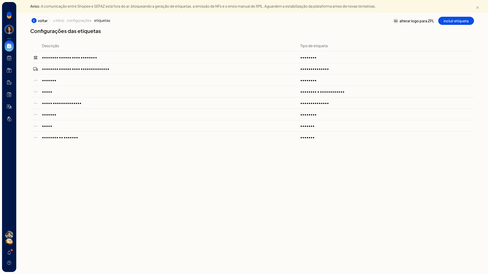
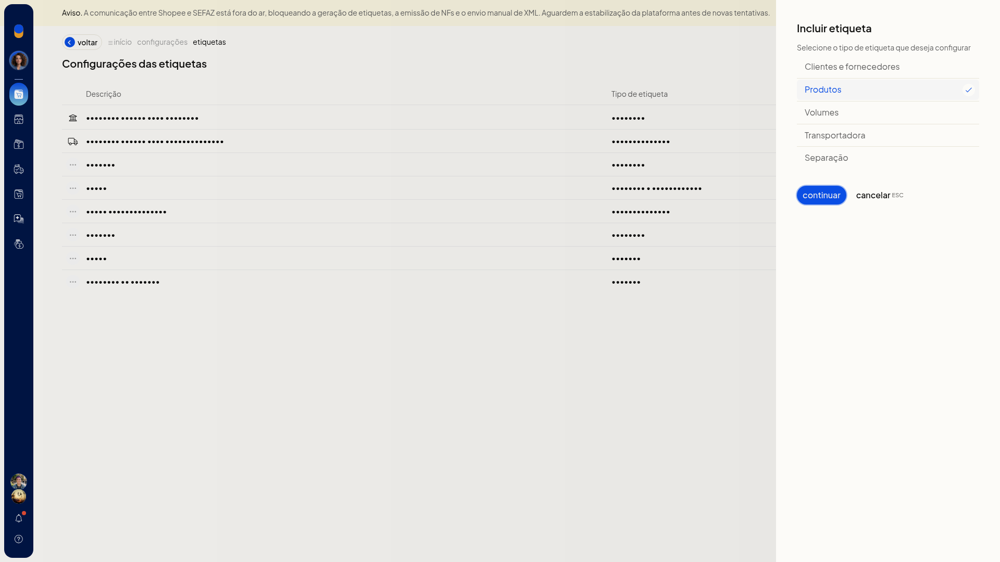
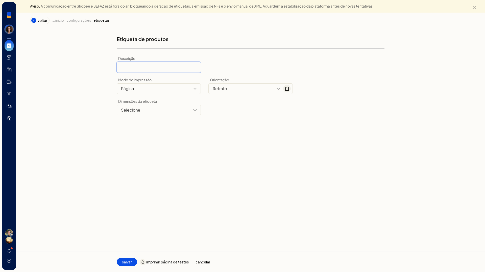
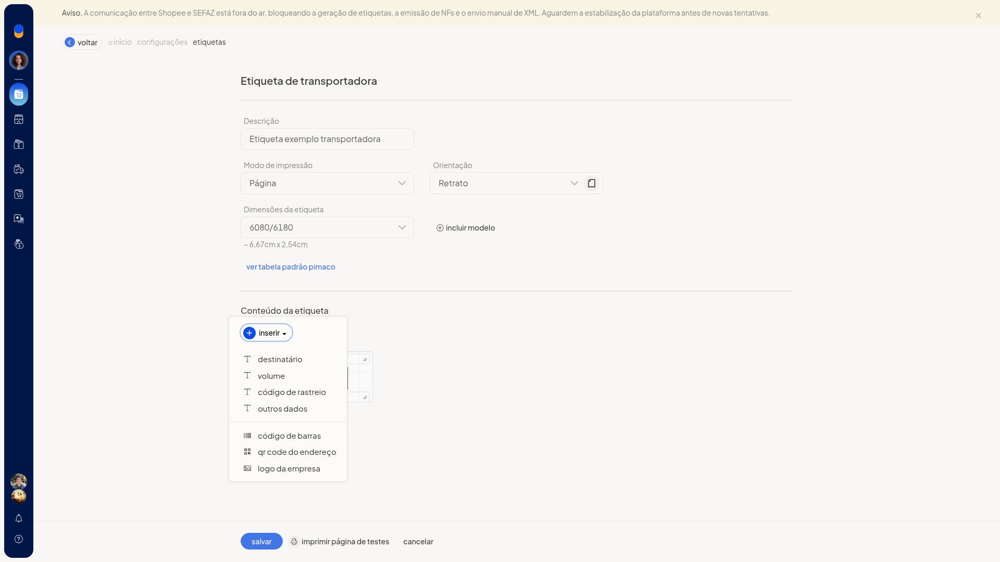

Etiquetas de envio: formatos e erros
Importante
- Um aviso de indisponibilidade ligado a Shopee/SEFAZ, na lista de expedição e na lista de etiquetas, impede a impressão de etiquetas, a emissão de nota fiscal e o envio manual de XML.
- Não é possível imprimir as etiquetas do gateway logístico se o agrupamento foi concluído manualmente, sem integração com a logística.
- Para imprimir as etiquetas da forma de envio, os pedidos precisam já ter sido enviados para a forma de envio, e a forma de envio precisa oferecer impressão de etiquetas.
- Para imprimir as etiquetas do ecommerce, a expedição precisa ter pedido no ecommerce e a integração precisa estar ativa e permitir etiquetas.
- Coleta, etiqueta de transportadora, declaração de conteúdo e envio de XML só aparecem no menu de um agrupamento de transportadora com DC-e.
Instruções
Conferir o aviso que impede a impressão
-
Acesse Vendas > Expedição.
-
Se a lista exibir o aviso de indisponibilidade ligado a Shopee/SEFAZ, a impressão de etiquetas fica impedida, junto com a emissão de nota fiscal e o envio manual de XML.

Conferir o formato ao incluir um modelo
-
Acesse Configurações > Configurações ERP > Geral > Configurações das etiquetas.

-
Na lista, confira os modelos pelo uso: Correios, Transportadora, Produtos, Clientes e fornecedores e Volumes.

-
Clique em incluir etiqueta.
-
Selecione o tipo: Clientes e fornecedores, Produtos, Volumes, Transportadora ou Separação.
-
Clique em Continuar.

-
No formulário de etiqueta de produtos, informe a descrição.
-
Em Modo de impressão, escolha Página ou Bobina.
-
Em Orientação, escolha Retrato ou Paisagem.
-
Em Dimensões, selecione o código da folha, como 3080/3180, 6080/6180 ou A4050/A4250/A4350.
-
Clique em salvar para gravar o modelo. Use imprimir página de testes só se quiser testar o formato antes, ou cancelar para sair sem gravar.

O mesmo incluir etiqueta abre o formulário de transportadora quando esse tipo é escolhido.

Imprimir etiquetas no agrupamento
-
Acesse Vendas > Expedição.
-
Na visão por agrupamentos, abra o menu de contexto do agrupamento.
-
Em um agrupamento de gateway, escolha Imprimir etiquetas de volumes ou Imprimir etiquetas de clientes. O mesmo menu também oferece Imprimir DANFEs.

-
Em um agrupamento de transportadora com DC-e, escolha Imprimir etiquetas de transportadora. O menu também oferece Imprimir coleta, Imprimir declaração de conteúdo e Enviar XML das notas para transportadora. A impressão só segue se as regras do bloco Importante forem atendidas.

Tratar o erro da impressão automática
-
Acesse Configurações > Configurações ERP > Geral > Impressão automática (Novo/Recomendado).
-
Se a atribuição da impressora padrão exibir Erro ao obter impressoras e Unable to establish connection with QZ Tray, deixe o aplicativo de conexão (QZ Tray) acessível. Sem ele, a atribuição não lista impressoras. A tela também oferece imprimir etiqueta teste, testar conexão e baixar aplicativo.

Direcionar a etiqueta de envio no PrintNode
-
Acesse Configurações > Configurações ERP > Geral > Impressão PrintNode.
-
Siga o texto da página: crie a conta em www.printnode.com, instale e faça login no cliente, gere a API key e cole no campo API Key.
-
Em Atribuir impressoras padrão, abra Impressão de etiquetas de envio. A página avisa que a etiqueta de envio é enviada em ZPL e exige impressora Zebra. As opções começam em Nenhuma e passam a listar as impressoras que o PrintNode devolve.
-
Em Atribuir impressoras por usuários, abra quem vai imprimir e defina Impressão de etiquetas de envio em Impressora padrão.
-
Clique em aplicar para gravar a impressora dessa pessoa, ou em cancelar para fechar sem aplicar. Na página, clique em Salvar para gravar a configuração da conta.


Informações adicionais
- Na lista de etiquetas, o botão alterar logo para ZPL fica junto de incluir etiqueta.
- Em Configurações > Configurações ERP > Vendas > Configurações da expedição, Imprimir automaticamente ao finalizar expedição pode reunir DANFE e Etiqueta de envio.
- A opção Imprimir valor declarado nas etiquetas pode ficar ligada ou desligada nessa mesma tela.